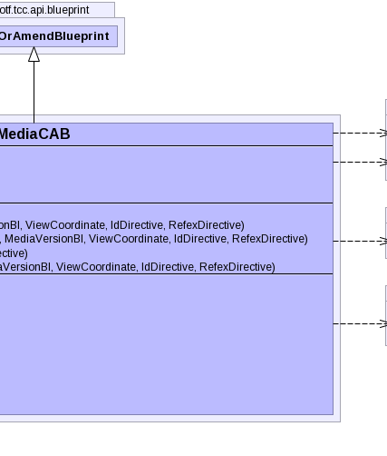

public class MediaCAB extends CreateOrAmendBlueprint
MediaChronicleBI. This is the preferred method for updating or
creating new descriptions.TerminologyBuilderBI,
MediaChronicleBI|  |
| Modifier and Type | Field and Description |
|---|---|
byte[] |
dataBytes |
String |
format |
static UUID |
mediaSpecNamespace |
String |
textDescription |
idDirective, pcs, properties, referencedComponent, refexDirective| Constructor and Description |
|---|
MediaCAB(int conceptNid,
int typeNid,
String format,
String textDescription,
byte[] dataBytes,
IdDirective idDirective)
Instantiates a new media blueprint using nid values.
|
MediaCAB(int conceptNid,
int typeNid,
String format,
String textDescription,
byte[] dataBytes,
MediaVersionBI mediaVersion,
ViewCoordinate viewCoordinate,
IdDirective idDirective,
RefexDirective refexDirective)
Instantiates a new media blueprint using nid values and a given
mediaVersion. |
MediaCAB(UUID conceptUuid,
UUID typeUuid,
String format,
String textDescription,
byte[] dataBytes,
IdDirective idDirective)
Instantiates a new media blueprint using uuid values.
|
MediaCAB(UUID conceptUuid,
UUID typeUuid,
String format,
String textDescription,
byte[] dataBytes,
MediaVersionBI mediaVersion,
ViewCoordinate viewCoordinate,
IdDirective idDirective,
RefexDirective refexDirective)
Instantiates a new media blueprint using uuid values and a given
mediaVersion. |
MediaCAB(UUID conceptUuid,
UUID typeUuid,
String format,
String textDescription,
byte[] dataBytes,
UUID componentUuid,
MediaVersionBI mediaVersion,
ViewCoordinate viewCoordinate,
IdDirective idDirective,
RefexDirective refexDirective)
Instantiates a new media blueprint using uuid values and a given
mediaVersion. |
| Modifier and Type | Method and Description |
|---|---|
int |
getConceptNid()
Gets the enclosing concept nid associated with this media blueprint.
|
UUID |
getConceptUuid()
Gets the enclosing concept uuid associated with this media blueprint.
|
byte[] |
getDataBytes()
Gets the data bytes representing the media associated with this media type.
|
String |
getFormat()
Gets the string representing the format associated with this media type.
|
String |
getTextDescription()
Gets a text description of the media associated with this media blueprint.
|
int |
getTypeNid()
Gets the media type nid associated with this media blueprint.
|
UUID |
getTypeUuid()
Gets the media type uuid associated with this media blueprint.
|
void |
recomputeUuid()
Computes the uuid for this media based on the enclosing concept uuid and
the data bytes.
|
protected void |
setConceptUuid(UUID conceptNewUuid)
Sets the enclosing concept uuid associated with this media blueprint.
|
boolean |
validate(MediaVersionBI mediaVersion)
Validates this media blueprint's fields against the given
mediaVersion. |
addAnnotationBlueprint, addExtraUuid, addLongId, addPropertyChangeListener, addPropertyChangeListener, addStringId, getAnnotationBlueprints, getComponentNid, getComponentUuid, getComponentUUID, getIdMap, getInt, getPrimoridalUuidString, getPrimoridalUuidString, getProperties, getReferencedComponent, getStatus, getUuid, propertyChange, removePropertyChangeListener, removePropertyChangeListener, replaceAnnotationBlueprints, setComponentUuid, setComponentUuidNoRecompute, setCurrent, setReferencedComponent, setRetired, setStatuspublic static final UUID mediaSpecNamespace
public String format
public String textDescription
public byte[] dataBytes
public MediaCAB(int conceptNid,
int typeNid,
String format,
String textDescription,
byte[] dataBytes,
IdDirective idDirective)
throws IOException,
InvalidCAB,
ContradictionException
conceptNid - the nid of the enclosing concepttypeNid - the nid representing the type of mediaformat - a string describing the media formattextDescription - a string describing the mediadataBytes - the data bytes representing the mediaidDirective - IOException - signals that an I/O exception has occurredInvalidCAB - if the any of the values in blueprint to make are
invalidContradictionException - if more than one version is found for a
given position or view coordinatepublic MediaCAB(UUID conceptUuid, UUID typeUuid, String format, String textDescription, byte[] dataBytes, IdDirective idDirective) throws IOException, InvalidCAB, ContradictionException
conceptUuid - the uuid of the enclosing concepttypeUuid - the uuid representing the type of mediaformat - a string describing the media formattextDescription - a string describing the mediadataBytes - the data bytes representing the mediaIOException - signals that an I/O exception has occurredInvalidCAB - if the any of the values in blueprint to make are
invalidContradictionException - if more than one version is found for a
given position or view coordinatepublic MediaCAB(int conceptNid,
int typeNid,
String format,
String textDescription,
byte[] dataBytes,
MediaVersionBI mediaVersion,
ViewCoordinate viewCoordinate,
IdDirective idDirective,
RefexDirective refexDirective)
throws IOException,
InvalidCAB,
ContradictionException
mediaVersion.conceptNid - the nid of the enclosing concepttypeNid - the nid representing the type of mediaformat - a string describing the media formattextDescription - a string describing the mediadataBytes - the data bytes representing the mediamediaVersion - the media version to use as a patternviewCoordinate - the view coordinate specifying which versions are
active and inactiveidDirective - refexDirective - IOException - signals that an I/O exception has occurredInvalidCAB - if the any of the values in blueprint to make are
invalidContradictionException - if more than one version is found for a
given position or view coordinatepublic MediaCAB(UUID conceptUuid, UUID typeUuid, String format, String textDescription, byte[] dataBytes, MediaVersionBI mediaVersion, ViewCoordinate viewCoordinate, IdDirective idDirective, RefexDirective refexDirective) throws IOException, InvalidCAB, ContradictionException
mediaVersion.conceptUuid - the uuid of the enclosing concepttypeUuid - the uuid representing the type of mediaformat - a string describing the media formattextDescription - a string describing the mediadataBytes - the data bytes representing the mediamediaVersion - the media version to use as a patternviewCoordinate - the view coordinate specifying which versions are
active and inactiveidDirective - refexDirective - IOException - signals that an I/O exception has occurredInvalidCAB - if the any of the values in blueprint to make are
invalidContradictionException - if more than one version is found for a
given position or view coordinatepublic MediaCAB(UUID conceptUuid, UUID typeUuid, String format, String textDescription, byte[] dataBytes, UUID componentUuid, MediaVersionBI mediaVersion, ViewCoordinate viewCoordinate, IdDirective idDirective, RefexDirective refexDirective) throws IOException, InvalidCAB, ContradictionException
mediaVersion. Can specify a uuid to represent the media
component.conceptUuid - the uuid of the enclosing concepttypeUuid - the uuid representing the type of mediaformat - a string describing the media formattextDescription - a string describing the mediadataBytes - the data bytes representing the mediacomponentUuid - the uuid to represent the media componentmediaVersion - the media version to use as a patternviewCoordinate - the view coordinate specifying which versions are
active and inactiveidDirective - refexDirective - IOException - signals that an I/O exception has occurredInvalidCAB - if the any of the values in blueprint to make are
invalidContradictionException - if more than one version is found for a
given position or view coordinatepublic void recomputeUuid()
throws NoSuchAlgorithmException,
IOException,
InvalidCAB,
ContradictionException
recomputeUuid in class CreateOrAmendBlueprintNoSuchAlgorithmException - indicates a no such algorithm exception
has occurredUnsupportedEncodingException - indicates an unsupported encoding
exception has occurredIOException - signals that an I/O exception has occurredInvalidCAB - if the any of the values in blueprint to make are
invalidContradictionException - if more than one version is found for a
given position or view coordinatepublic UUID getTypeUuid()
public int getTypeNid()
throws IOException
IOException - signals that an I/O exception has occurredpublic int getConceptNid()
throws IOException
IOException - signals that an I/O exception has occurredpublic UUID getConceptUuid()
public byte[] getDataBytes()
public String getFormat()
public String getTextDescription()
protected void setConceptUuid(UUID conceptNewUuid)
conceptNewUuid - the enclosing concept uuidpublic boolean validate(MediaVersionBI mediaVersion) throws IOException
mediaVersion. Compares the status nid, component nid,
enclosing concept nid, media type nid, format, description, and bytes.mediaVersion - the media version to use for validationtrue, if this media blueprint's fields are
equal to the specified media versionIOException - signals that an I/O exception has occurredCopyright © 2013 International Health Terminology Standards Development Organisation. All rights reserved.